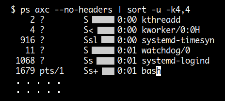
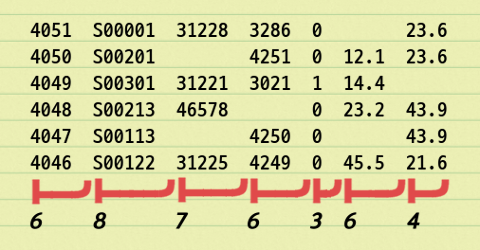

Field 분리
Field 분리에는 FS 를 이용하는 기본 방법과 FPAT, FIELDWIDTHS 를 이용하는 방법 세 가지가 있습니다.
FS 에 설정되는 값은 문자가 두 개 이상이면 regexp 로 해석됩니다.
디폴트 값은 FS = " "
RS( Record Seperator ) 에서는 RS="" 가 특별히 처리된다면
FS( Field Seperator ) 에서는 FS=" " 가 특별히 처리됩니다.
FS=" " 의 기능은 실제적으로 FS="[ \t\n]+" 와 같습니다.
다시 말해서 space 뿐만 아니라 tab, newline 도 같은 분리자로 취급한다는 뜻입니다.
FS="[ \t\n]+" 의 경우 한가지 단점이 있는데 첫 번째 필드 시작 전에 공백이 있으면
null 값 필드가 생긴다는 것입니다.
하지만 FS=" " 의 경우는 먼저 공백을 삭제하기 때문에 null 값 필드가 생기지 않습니다.
이것은 RS="" 와 비슷한 기능입니다.
# 디폴트 FS 값은 space
$ awk 'BEGIN{ printf FS }' | od -a
0000000 sp
0000001
# 실제적으로 FS=" " 는 FS='[ \t\n]+' 와 같은 기능을 합니다.
# 추가로 FS=" " 는 첫 번째 필드 시작 전에 있는 공백을 먼저 삭제 처리합니다.
$ printf %b ' 11 \t\t22 33\n\t\n \n44' |
awk '{ printf "(%s) (%s) (%s) (%s) NF: %d\n",$1,$2,$3,$4,NF }' RS='^$' FS=' '
(11) (22) (33) (44) NF: 4
# FS=" " 와 달리 FS='[ \t\n]+' 는 첫 번째 필드 시작 전에 공백이 있을 경우 null 값 필드가 생깁니다.
printf %b ' 11 \t\t22 33\n\t\n \n44' |
awk '{ printf "(%s) (%s) (%s) (%s) (%s) NF: %d\n",$1,$2,$3,$4,$5,NF }' RS='^$' FS='[ \t\n]+'
() (11) (22) (33) (44) NF: 5
cut 명령과 awk 가 다른점
쉘 스크립트에서 필드값을 분리할 때 cut 명령을 사용하는데요.
cut 명령과 awk 는 다음과 같은 차이가 있습니다.
awk 의 경우 공백 개수에 상관없이 정확히 필드를 분리합니다.
$ cat file
AAA BBB CCC DDD
XXX YYY ZZZ KKK
111 222 333 444
................................
$ awk '{print $1,$2,$3,$4}' file
AAA BBB CCC DDD
XXX YYY ZZZ KKK
111 222 333 444
$ awk '{print $1,$3}' file
AAA CCC
XXX ZZZ
111 333
cut 명령은 실제 space 개수에 따라서만 필드가 분리됩니다.
$ cat file
AAA BBB CCC DDD
XXX YYY ZZZ KKK
111 222 333 444
......................
$ cut -d' ' -f1 file
AAA
$ cut -d' ' -f2 file
BBB
XXX
$ cut -d' ' -f3 file
CCC
YYY
111
cut 명령과 같이 FS 값을 실제 space 로 설정하려면
다음과 같이 regexp 표현식 [ ] or ( ) 을 이용해 설정하면 됩니다.
# space 수에 관계없이 필드 개수가 4 개로 나온다.
$ echo '11 22 33 44' | awk '{ print NF }' FS=' '
4
# FS='[ ]' 로 설정하면 모든 space 에서 필드가 분리되어 필드 개수가 11 개로 나온다
$ echo '11 22 33 44' | awk '{ print NF }' FS='[ ]'
11
sort 명령과 awk 가 다른점
다음은 ps 명령의 출력에서 4 번째 TIME 컬럼의 값을 sort -u 명령을 이용해 uniq 한 값을 구하려고 한 것인데요.
결과를 보시면 uniq 한값이 아니라 0:00, 0:01 값이 중복되어 나타나고 있습니다.
이렇게 되는 이유는 앞에 흰색으로 표시한 공백이 컬럼 값에 포함되어 다른 값으로 인식되기 때문입니다.

따라서 정상적으로 결과가 출력되기 위해서는 sort 명령의 -b( ignore-leading-blanks )
옵션을 함께 사용해야 합니다.
하지만 이것도 separator 값이 공백이 아닐 경우는 사용할 수 없습니다.
awk 의 경우는 FS 값만 변경해주면 되고 정확히 uniq 한 값을 출력합니다.
$ ps axc --no-headers | awk '{a[$4]=$0} END {for (i in a) print a[i]}'
5710 ? Sl 11:35 chrome
1617 ? Sl 5:40 konsole
5804 ? Sl 1:59 chrome
5556 ? Sl 59:40 chrome
24408 pts/10 Ss 0:10 bash
1181 ? Ssl 0:12 polkitd
1378 ? Ss 0:13 dbus-daemon
. . . . .
. . . . .
RS = "" 이고 FS 가 single character 일 경우
RS = "" 이면 레코드가 공백 라인에 의해 분리가 되는데요.
이때 FS 값이 single character 이면 자동으로 newline 에서도 필드가 분리됩니다.
$ cat file
Amelia@555-5553
Anthony@555-3412
Becky@555-7685
.................
# FS='@' 이지만 newline 에서도 분리가 되어 NF 값이 6 개로 나온다.
$ awk '{print NF}' FS='@' RS='' file
6
# 실질적으로 FS='[@\n]' 와 같다.
$ awk '{print NF}' FS='[@\n]' RS='' file
6
$ awk '{printf "(%s) (%s) (%s) (%s)\n",$1,$2,$3,$4}' FS='@' RS='' file
(Amelia) (555-5553) (Anthony) (555-3412)
$ awk '{printf "(%s) (%s) (%s) (%s)\n",$1,$2,$3,$4}' FS='[@\n]' RS='' file
(Amelia) (555-5553) (Anthony) (555-3412)
---------------------------------------------------------------------------
# FS='[@]' 로 설정하면 정확히 '@' 문자에서만 분리가 된다.
$ awk '{print NF}' FS='[@]' RS='' file
4
$ awk '{printf "(%s) (%s) (%s) (%s)\n",$1,$2,$3,$4}' FS='[@]' RS='' file
(Amelia) (555-5553
Anthony) (555-3412
Becky) (555-7685)
FS = ""
FS 값을 "" 로 설정하면 문자 단위로 필드가 분리됩니다.
$ echo "foo bar" | awk '{for (i=1; i<=NF; i++) print "$" i " : " $i}' FS=''
$1 : f
$2 : o
$3 : o
$4 :
$5 : b
$6 : a
$7 : r
FS 값에 사용되는 ^, $ regexp 문자
FS 에 사용되는 ^, $ 문자는 레코드의 시작과 끝을 나타냅니다.
따라서 만약에 FS 에 ^ 를 사용한다면 레코드의 시작 부분에만 매칭이 되고
$ 를 사용한다면 레코드의 마지막 부분에만 매칭이 되게 됩니다.
FS = "^$"
이것은 레코드 값이 존재하는 한 매칭이 되지 않으므로
레코드 분리가 일어나지 않아 NF 가 1 이 되고 $0 == $1 가 됩니다.
다음 예는 레코드의 필드값이 경우에 따라서 공백으로 비어 있습니다. 이와 같이 구성되어 있을 경우 각 컬럼에 맞는 필드값을 정확히 추출하기 어려운데요. 이럴 때는 FS 를 이용하는 방법 대신에 FIELDWIDTHS 를 사용할 수 있습니다. 이 방법은 FIELDWIDTHS 에 직접 입력한 컬럼 사이즈에 따라서 필드를 분리합니다.

$ awk -v FIELDWIDTHS="6 8 7 6 3 6 4" '{
printf "(%s) (%s) (%s) (%s) (%s) (%s) (%s)\n",
$1, $2, $3, $4, $5, $6, $7
}' file
(4051 ) (S00001 ) (31228 ) (3286 ) (0 ) ( ) (23.6)
(4050 ) (S00201 ) ( ) (4251 ) (0 ) (12.1 ) (23.6)
(4049 ) (S00301 ) (31221 ) (3021 ) (1 ) (14.4 ) ()
(4048 ) (S00213 ) (46578 ) ( ) (0 ) (23.2 ) (43.9)
(4047 ) (S00113 ) ( ) (4250 ) (0 ) ( ) (43.9)
(4046 ) (S00122 ) (31225 ) (4249 ) (0 ) (45.5 ) (21.6)
그런데 위의 출력 결과를 보면 필드값에 공백이 포함되죠.
gawk 4.2 부터는 각 컬럼 사이즈에 : 를 이용해서 skip width 를 지정할 수 있습니다.
그러니까 사이즈가 6 인 컬럼을 사용하고 싶은데 앞에 공백이 2 만큼 있으면
2:6 와 같이 작성하면 됩니다.
$ awk -v FIELDWIDTHS="4 2:6 2:5 2:4 2:1 2:4 2:2" '{
printf "(%s) (%s) (%s) (%s) (%s) (%s) (%s)\n",
$1, $2, $3, $4, $5, $6, $7
}' file
(4051) (S00001) (31228) (3286) (0) ( ) (23)
(4050) (S00201) ( ) (4251) (0) (12.1) (23)
(4049) (S00301) (31221) (3021) (1) (14.4) ()
(4048) (S00213) (46578) ( ) (0) (23.2) (43)
(4047) (S00113) ( ) (4250) (0) ( ) (43)
(4046) (S00122) (31225) (4249) (0) (45.5) (21)
또한 gawk 4.2 부터는 마지막 컬럼 사이즈로 이후 모두를 나타내는 * 도 사용할 수 있습니다.
$ awk -v FIELDWIDTHS="4 2:6 2:*" '{
printf "(%s) (%s) (%s)\n", $1, $2, $3
}' file
(4051) (S00001) (31228 3286 0 23.6)
(4050) (S00201) ( 4251 0 12.1 23.6)
(4049) (S00301) (31221 3021 1 14.4)
(4048) (S00213) (46578 0 23.2 43.9)
(4047) (S00113) ( 4250 0 43.9)
(4046) (S00122) (31225 4249 0 45.5 21.6)
FIELDWIDTHS 방법을 사용한 후에 다시 FS 나 FPAT 방법을 사용하려면 해당 변수값을 다시 설정해 주면 됩니다.
$ awk -v FIELDWIDTHS="6 8 7 6 3 6 4" '{ print NF } NR==3 { FS=FS }' file
7
7
7
6 # NR==3 에서 FS=FS 가 설정되어 4 번째 레코드부터 FS 방법이 사용된다.
5
7
다음은 CSV( comma-separated values ) 레코드의 한 예입니다.
전체 필드 개수가 7 개인 레코드인데 3 번째 필드값의 double quotes 안에서도 , 가 사용되어
실제 필드 개수가 8 개로 나오고 있습니다.
Robbins,Arnold,"1234 A Pretty Street, NE",MyTown,MyState,12345-6789,USA
1 2 3 4 5 6 7
.......................................................................
# 필드 개수가 총 8 개로 나온다.
$ echo 'Robbins,Arnold,"1234 A Pretty Street, NE",MyTown,MyState,12345-6789,USA' |
awk '{ print NF }' FS=,
8
이와 같은 문제를 해결하기 위한 것이 FPAT( Field PATtern ) 인데요. 기존의 FS 를 이용하는 방법이 레코드에서 FS 값을 매칭하여 분리했다면 FPAT 을 이용하는 방법은 실제 필드값 자체를 매칭합니다.
따라서 위 예제와 같은 경우 FPAT 값은 다음 두 가지로 설정할 수 있습니다.
[^,]+(,이외의 값 )"[^"]+"(" "로 둘러싸인 값 )
# 필드 개수가 정확히 7 개로 나온다
$ echo 'Robbins,Arnold,"1234 A Pretty Street, NE",MyTown,MyState,12345-6789,USA' |
awk -v FPAT='[^,]+|"[^"]+"' '{ print NF }'
7
$ echo 'Robbins,Arnold,"1234 A Pretty Street, NE",MyTown,MyState,12345-6789,USA' |
awk '{printf "%s\n%s\n%s\n%s\n%s\n%s\n%s\n", $1,$2,$3,$4,$5,$6,$7}' FPAT='[^,]+|"[^"]+"'
Robbins
Arnold
"1234 A Pretty Street, NE"
MyTown
MyState
12345-6789
USA
예제2 )
$ echo 'ip="192.168.1.1" method="http https ftp" period="5"' |
awk '{ printf "(%s)\n(%s)\n(%s)\n",$1,$2,$3 }' FPAT='[^ ]+="[^"]*"'
(ip="192.168.1.1")
(method="http https ftp")
(period="5")
FPAT 을 이용한 필드 추출
FPAT 을 이용하면 특정 스트링 패턴을 필드로 추출하여 사용할 수 있습니다.
다음 예제를 보시면 {{AAA}},{{BBB}} 이 각각 $1, $2 필드 변수에 할당된 것을 볼 수 있습니다.
$ echo "{{AAA}} design will serve as the basis for the planned Mars {{BBB}} rover." |
awk '{ print $1; print $2; print NF }' FPAT='{{[A-Z]+}}'
{{AAA}}
{{BBB}}
2
FPAT 방법을 사용한 후에 다시 FS 나 FIELDWIDTHS 방법을 사용하려면 해당 변수값을 다시 설정해 주면 됩니다.
현재 사용되고 있는 방법은 PROCINFO["FS"] 값으로 조회할 수 있습니다.
$ seq 3 | awk '{
check()
FIELDWIDTHS = FIELDWIDTHS
check()
FPAT = FPAT
check()
FS = FS
}
function check() {
using_fs = (PROCINFO["FS"] == "FS")
using_fw = (PROCINFO["FS"] == "FIELDWIDTHS")
using_fpat = (PROCINFO["FS"] == "FPAT")
if (using_fs)
print "using FS"
else if (using_fw)
print "using FIELDWIDTHS"
else if (using_fpat)
print "using FPAT"
}'
using FS
using FIELDWIDTHS
using FPAT
using FS
using FIELDWIDTHS
using FPAT
using FS
using FIELDWIDTHS
using FPAT
------------------------------------
$ seq 10 | awk '{
if (NR == 4) FIELDWIDTHS = FIELDWIDTHS
if (NR == 7) FPAT = FPAT
check()
}
function check() {
using_fs = (PROCINFO["FS"] == "FS")
using_fw = (PROCINFO["FS"] == "FIELDWIDTHS")
using_fpat = (PROCINFO["FS"] == "FPAT")
if (using_fs)
print "using FS"
else if (using_fw)
print "using FIELDWIDTHS"
else if (using_fpat)
print "using FPAT"
}'
using FS
using FS
using FS
using FIELDWIDTHS
using FIELDWIDTHS
using FIELDWIDTHS
using FPAT
using FPAT
using FPAT
using FPAT
예제 )
objdump 명령의 -t 옵션을 이용하면 symbol table 을 조회해 볼 수 있습니다. 출력은 5 컬럼으로 구성되는데 첫 번째 컬럼의 symbol value 와 세 번째 컬럼의 section name 사이에 있는 것이 심볼에 설정되어 있는 flag 값입니다. 이 flag 값은 space 로 처리되는 경우가 있어서 FIELDWIDTHS 를 이용해 분리해야 하는데요. 그런데 문제는 1, 2 번째 컬럼은 WIDTH 가 정해져 있어서 가능하겠는데 3, 4, 5 번째 컬럼의 출력 상태를 보면 WIDTH 를 적용시킬 수가 없습니다. 이럴 때는 어떻게 분리할 수 있을까요?
$ objdump -t hello
. . . .
. . . .
0000000000000000 l df *ABS* 0000000000000000 hello.c
0000000000000000 l df *ABS* 0000000000000000 crtstuff.c
00000000000009a4 l O .eh_frame 0000000000000000 __FRAME_END__
0000000000000000 l df *ABS* 0000000000000000
0000000000200d90 l .init_array 0000000000000000 __init_array_end
0000000000200d98 l O .dynamic 0000000000000000 _DYNAMIC
0000000000200d88 l .init_array 0000000000000000 __init_array_start
0000000000000860 l .eh_frame_hdr 0000000000000000 __GNU_EH_FRAME_HDR
0000000000200fa8 l O .got 0000000000000000 _GLOBAL_OFFSET_TABLE_
0000000000000830 g F .text 0000000000000002 __libc_csu_fini
0000000000000000 w *UND* 0000000000000000 _ITM_deregisterTMCloneTable
0000000000201000 w .data 0000000000000000 data_start
0000000000000000 F *UND* 0000000000000000 puts@@GLIBC_2.2.5
0000000000000000 F *UND* 0000000000000000 hello_foo
^^^^^^^^^^^^^^^^ ^^^^^^^ ^^^^^^^
symbol value flags section
------------------------------------------------------------------------------------
# 다음과 같이 FIELDWIDTHS 와 FS 방법을 같이 사용합니다.
$ objdump -t hello |
awk 'NR > 4 && NF > 0 {
FIELDWIDTHS="16 1:7 1:*"; $0=$0; f1=$1; f2=$2
FS=FS; $0=$3;
printf "(%s) (%s) (%s) (%s) (%s)\n", f1, f2, $1, $2, $3
}'
. . . .
. . . .
(0000000000000000) (l df) (*ABS*) (0000000000000000) (hello.c)
(0000000000000000) (l df) (*ABS*) (0000000000000000) (crtstuff.c)
(00000000000009a4) (l O) (.eh_frame) (0000000000000000) (__FRAME_END__)
(0000000000000000) (l df) (*ABS*) (0000000000000000) ()
(0000000000200d90) (l ) (.init_array) (0000000000000000) (__init_array_end)
(0000000000200d98) (l O) (.dynamic) (0000000000000000) (_DYNAMIC)
(0000000000200d88) (l ) (.init_array) (0000000000000000) (__init_array_start)
(0000000000000860) (l ) (.eh_frame_hdr) (0000000000000000) (__GNU_EH_FRAME_HDR)
(0000000000200fa8) (l O) (.got) (0000000000000000) (_GLOBAL_OFFSET_TABLE_)
(0000000000000830) (g F) (.text) (0000000000000002) (__libc_csu_fini)
(0000000000000000) ( w ) (*UND*) (0000000000000000) (_ITM_deregisterTMCloneTable)
(0000000000201000) ( w ) (.data) (0000000000000000) (data_start)
(0000000000000000) ( F) (*UND*) (0000000000000000) (puts@@GLIBC_2.2.5)
(0000000000000000) ( F) (*UND*) (0000000000000000) (hello_foo)
. . . .
. . . .
E-mail 주소 분리
$ echo 'Jan 23 00:46:24 postfix/smtp[31481]: to=<wanted1918@gmail.com>, relay=...' |
awk -F'[<>]' '{print $2}' # 또는 -F '<|>'
wanted1918@gmail.com
필드 range 추출과 삭제
다음은 필드 range 를 인수로 받아서 추출, 삭제하는 함수입니다.
$ cat file
1,2,3,4,5,6,7,8,9
a,b,c,d,e,f,g,h,i
...................................
# 3 ~ 6 필드 range 추출
$ awk '
{ print subflds(3,6) }
function subflds(s,e, r) {
r = $(s++)
while (s <= e) r = r OFS $(s++)
return r
}
' FS=, OFS=, file
3,4,5,6
c,d,e,f
# 3 ~ 6 필드 range 삭제
$ awk '
{ print delflds(3,6) }
function delflds(s,e, i,r) {
for (i=1; i<=NF; i++)
if (i < s || i > e)
r = r (r ? OFS : "") $i
return r
}
' FS=, OFS=, file
1,2,7,8,9
a,b,g,h,i